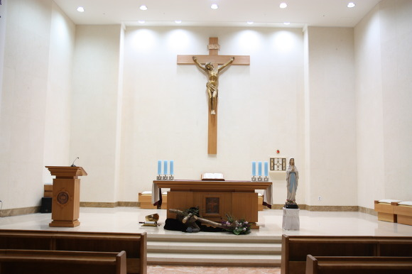

본당 소개
- 소속천주교 수원교구
- 주보성인아기 예수의 성녀 데레사
- 설립일2002.01.29.
- 신자 수약 2,978명
- 연락처사무실 031-216-0573 · 팩스 031-216-0578 · 이메일 maetan@casuwon.or.kr
- 주소경기도 수원시 영통구 인계로284번길 15 (지번: 매탄동 808)
미사 안내 (Mass Times)
- 주일07:00 · 10:30(교중) · 19:30(청년)
- 토요일16:00(어린이) · 19:30(청소년)
- 평일월 09:00 · 화 19:30 · 수 10:00 · 목 19:30 · 금 10:00
- 성사고해: 매 미사 30분 전
- 기타예비자 교리 주일 09:00 · 유아세례 3·6·9·12월 첫째 토 16:00 · 성모신심미사 매월 첫째 토 10:00 · 병자영성체 매월 셋째 목(사무실 신청) · 차·집 축복(사무실 신청)
성당 연혁 & 건축
- 2002본당 설립
- 2017제22회 경기도 건축문화상 특별상 (사용승인/비주거)
- 202425주년 준비위원회 발족
- 202525주년 기념 주간 준비
건축 개요: 종교시설, 지상 3층·지하 1층, 대지 1,511.30㎡, 연면적 2,545.23㎡, RC/철골.
성당 사진
